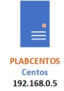
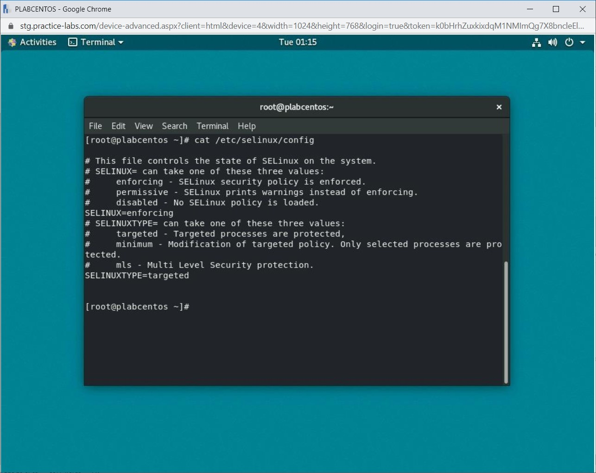
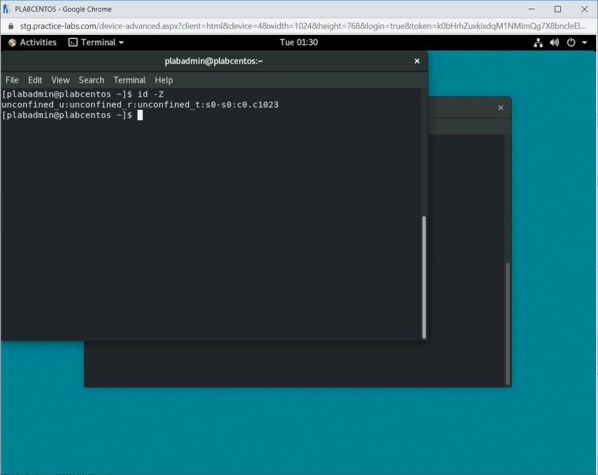

Introduction
9beca326-b493-4b0e-b3dc-d7dfb77df3c9
Welcome to the Identify and Access Management Practice Lab. In this module, you will be provided with the instructions and devices needed to develop your hands-on skills.
dc640c20-9434-45ea-b7c2-6d4d6a196bfc
Learning Outcomes
In this module, you will complete the following exercises:
- Exercise 1 - Enable Multifactor Authentication
- Exercise 2 - Perform Manual Review and Privilege Management
- Exercise 3 - Configure Mandatory Access Control
After completing this module, you will be able to:
- Enable Smart Card Logon
- Verify Smart Card Logon Capability
- View Current Status of SELinux
- Change the SELinux Mode
- View SELinux Contexts for Processes, Domain Transitions, and Users
After completing this module, you will have further knowledge of:
- Manual Review
- Privilege Management
- Single Sign-on
Exam Objectives
The following exam objectives are covered in this lab:
- 2.1 Given a scenario, apply security solutions for infrastructure management.
Note: Our main
focus is to cover the practical, hands-on aspects of the exam
objectives. We recommend referring to course material or a search engine
to research theoretical topics in more detail.
Lab Duration
It will take approximately 1 hour to complete this lab.
1b317064-7b0c-48e0-845c-05a2d99e80c5
Help and Support
For more information on using Practice Labs, please see our Help and Support page. You can also raise a technical support ticket from this page.
Click Next to view the Lab topology used in this module.
d2c53300-f951-45a9-9aa4-3d4ecae69e11
Lab Topology
During your session, you will have access to the following lab configuration.

Depending on the exercises, you may or may not use all
of the devices, but they are shown here in the layout to get an overall
understanding of the topology of the lab.
- PLABDC01 - (Windows Server 2019 - Domain Server)
- PLABDM01 - (Windows Server 2019 - Domain Member)
- PLABKALI01 - (Kali Linux 2019 - Linux Kali)
- PLABWIN10 - (Windows 10 - Domain Member Workstation)
- PLABCENTOS - (Centos 8 Linux - Stand-alone Linux Server)
- PLABALIENVAULT - (Alien Vault Linux Security Management Platform)
Click Next to proceed to the first exercise.
<
Home |
README >
CompTIA Cybersecurity Analyst (CySA+) Practice Labs
Exercise 1 - Enable Multifactor Authentication
Single-factor authentication relies on a user name and
password to protect data, while multifactor authentication utilizes two
distinct stages: what you know (i.e., information for Single-factor) and what you have (for example, a text message with an access code is sent to a user’s pre-authorized mobile device).
Learning Outcomes
After completing this exercise, you will be able to:
- Enable Smart Card Logon
- Verify Smart Card Logon Capability
Your Devices
You will be using the following devices in this lab. Please power these on now.

- PLABDC01 - (Windows Server 2019 - Domain Server)
- PLABWIN10 - (Windows 10 - Domain Member Workstation)
Task 1 - Enable Smart Card Logon
Logging using a smart card typically calls for third
party software to be installed on a client and servers. Also, management
tools are required to administer the creation and revocation of a smart
card to corporate users.
Note: There is no
physical smart card installed on the lab device. The following steps
will merely show how to enable a smart card logon.
In this task, you will select a domain user account to use a smart card for signing-in to the domain network.
Step 1
Ensure you have powered on the required devices defined in the introduction and connect to PLABDC01.
The Server Manager window automatically opens.
Figure 1.1 Screenshot of PLABDC01: Showing the Server Manager window.
Step 2
Click Tools and select Active Directory Users and Computers.
Figure 1.2 Screenshot of PLABDC01: Clicking Tools and selecting Active Directory Users and Computers.
Step 3
On the Active Directory Users and Computers console, ensure that the Users container is selected.
At the right details pane, right-click Matthew Bernstein and select Properties.
Figure 1.3 Screenshot of PLABDC01: Right-clicking a listed user and then selecting the Properties menu-options.
Step 4
On Matthew Bernstein Properties dialog box, click the Account tab.
Figure 1.4 Screenshot of PLABDC01: Clicking the Account tab in the user properties dialog box.
Step 5
On the Account tab under the Account options section, scroll down a bit.
Select the Smart card is required for interactive logon checkbox.
Click OK to save changes.
Figure 1.5 Screenshot of PLABDC01: Selecting the required settings and then clicking the OK button.
Step 6
Close Active Directory Users and Computers.
Figure 1.6 Screenshot of PLABDC01: Closing the Active Directory Users and Computers window.
Task 2 - Verify Smart Card Logon Capability
When you configure a user to log on this way, the
user must then use it on the next login. Without a smart card, the user
will not be able to proceed further beyond the login screen. In this
task, you will sign-in as a domain user to test the smart card logon
capability. To do this, perform the following steps:
Step 1
For this step, you will need to disable the Auto login feature. Navigate to the Settings and customization tab on the Practice Labs platform and de-select server auto login.
Figure 1.7 Screenshot of Practice-Labs environment: Disabling the Server auto login option.
Step 2
Connect to the PLABWIN10 device.
On the sign-in screen, click Other user.
 Figure 1.8 Screenshot of PLABDC01: Clicking Other user on the login screen.
Figure 1.8 Screenshot of PLABDC01: Clicking Other user on the login screen.
Step 3
In the User name box, type:
matthew.bernstein
In the Password box, type:
Passw0rd
Press Enter.
Figure 1.9 Screenshot of PLABWIN10: Entering the relevant login credentials and then pressing Enter.
Step 4
Since the user was configured to use a smart card for
logon, a system message appears. Note that if a smart card had been
assigned, you would be able to proceed past this step and log on as
normal.
Figure 1.10 Screenshot of PLABWIN10: Prompting to use a smart card to log in and the OK button selected.
Note: Ensure that you set the Server auto login feature to enable after completing this exercise.
<
Home |
README >
CompTIA Cybersecurity Analyst (CySA+) Practice Labs
Exercise 2 - Perform Manual Review and Privilege Management
In this exercise, you will learn about a manual
review, privilege management, and single sign-on. Manual review is
required for various reasons because automated tools may not be able to
catch everything via logs. You also need to perform privilege management
to continuously review who has what kind of privileges exist on the
systems and network. Then, single sign-on is a method to use one login
credentials to log on to multiple services or Web applications.
Learning Outcomes
After completing this module, you will have further knowledge of:
- Manual Review
- Privilege Management
- Single sign-on
Your Devices
This exercise contains supporting materials for CySA+.

Manual Review
It is always advised that you should use automated
tools to review logs and use these tools to perform deep analysis. Even
though this is a recommended action, it is quite likely that an
automated tool may miss out on a critical event in the system.
Therefore, a manual review is always a good method to perform log
analysis. It gives you the benefit and confidence that you have looked
at the logs and have also verified if the automated tool has done the
right job.
Privilege Management
In a network environment, user accounts are saved in
the directory services, such as Active Directory. Each account will have
some amount of privileges. However, some accounts will have more
privileges to perform certain tasks on the systems, services, networks,
and network devices. For example, you may assign privileges to a junior
administrator to manage the DHCP server or to reset user passwords.
Even though on a small network, it is easy to manage
privileges, but on a large network, it is less feasible to control
privileges using a manual method. It would be good to use a tool, such
as Privileged Access Management or PAM, which provides several benefits
over the manual method. Some of the key benefits are:
- You can track and monitor every privileged account on the network.
- You can also implement governance to keep an eye on the privileged accounts
- You can also record the privileged account activities to prevent misuse
- You can audit the privileged account activities and then add or remove privileges as deemed fit
Single Sign-On
Assume that you have several Web applications on your
organization’s network. Each Web application requires different user
credentials. If there are one or two Web applications, then it is easy
for the users to remember user credentials. However, if there are tens
or more different Web applications, managing user credentials become a
difficult task for the users.
To save the hassle for users to remember so many
credentials, you can use single sign-on. Web applications and services
need to be integrated so that a user can use a single user credential
and log on to any of the integrated Web applications and services.
Subsequent access to the remaining Web applications and services is
granted automatically. The user is saved from the hassle of remembering
different user credentials for each of the Web applications or services
on the network.
dc2a295a-ab17-4b52-8e1c-80389d10a470
<
Home |
README >
CompTIA Cybersecurity Analyst (CySA+) Practice Labs
Exercise 3 - Configure Mandatory Access Control
In Linux, you would use standard permissions, such as
rwx (read, write, and execute) and access control lists. However, there
is another method of enforcing strict permissions. This method is known
as Mandatory Access Control (MAC), which is used as SELinux or Security
Enhanced Linux in Linux. SELinux is enabled by default on CentOS. Its
default mode is enforcing, and SELinux should be kept in this mode as a
recommended practice.
In this exercise, you will learn to configure SELinux.
Learning Outcomes
After completing this exercise, you will be able to:
- View Current Status of SELinux
- Change the SELinux Mode
- View SELinux Contexts for Processes, Domain Transitions, and Users
Your Devices
You will be using the following devices in this lab. Please power these on now.

- PLABCENTOS - (Centos 8 Linux - Stand-alone Linux Server)
Task 1 - View Current Status of SELinux
By default, SELinux is configured to work in Enforcing mode. Overall, there are three different modes of SELinux:
- Enforcing: This is the default mode. SELinux will operate normally in this mode, enforing a specified policy on the entire system.
- Permissive: In this mode, SELinux will
enforce the specified policy as Enforcing mode allows, although it will
not deny any operations. This can be helpful when developing policies
and debugging in a non-production environment.
- Disabled: In this mode, the system will not enforce the specified policy and it does not label persistent objects (files, folders etc).
In this task, you will learn to view the current
status of SELinux. To view the current status of SELinux, perform the
following steps:
Step 1
Ensure that the required devices are powered on. Connect to PLABCENTOS.
Figure 3.1 Screenshot of PLABCENTOS: Showing the PLABCENTOS screen with the Activities menu.
Step 2
On the desktop, click Activities.
Figure 3.2 Screenshot of PLABCENTOS: Clicking the Activities menu.
Step 3
In the application pane, click the Terminal icon.
Figure 3.3 Screenshot of PLABCENTOS: Selecting the Terminal option from the application pane.
Step 4
The terminal prompt window is displayed. Type the following command:
su -
Press Enter.
At the Password prompt, type the following password:
Passw0rd
Press Enter. You should now be at the root prompt.
Figure 3.4 Screenshot of PLABCENTOS: Changing the account to the root account with the su command.
Step 5
Clear the screen by entering the following command:
clear
To see the current status of SELinux, type the following command:
getenforce
Press Enter.
Figure 3.5 Screenshot of PLABCENTOS: Entering the getenforce command in the terminal window.
Step 6
The current status of SELinux is displayed.
 Figure 3.6 Screenshot of PLABCENTOS: Verifying the current status of SELinux in the terminal window.
Figure 3.6 Screenshot of PLABCENTOS: Verifying the current status of SELinux in the terminal window.
Step 7
You can also get an overview of the SELinux configuration. Type the following command:
sestatus
Press Enter.
Figure 3.7 Screenshot of PLABCENTOS: Entering the sestatus command in the terminal window.
Step 8
The overview of the SELinux configuration is displayed.
Figure 3.8 Screenshot of PLABCENTOS: Displaying the SELinux configuration in the terminal window.
Step 9
Clear the screen by entering the following command:
clear
You can also get an overview of the SELinux configuration in the /etc/selinux/config file. Type the following command:
cat /etc/selinux/config
Press Enter.
Figure 3.9 Screenshot of PLABCENTOS: Entering the cat command to view the /etc/selinux/config file.
Step 10
The overview of the SELinux configuration is displayed.
Figure 3.10 Screenshot of PLABCENTOS: Viewing the /etc/selinux/config file.
Task 2 - Change the SELinux Mode
You can also toggle between Enforcing and Permissive modes.
In this task, you will learn to toggle between two modes of SELinux. To change the SELinux modes, perform the following steps:
Step 1
Clear the screen by entering the following command:
clear
By default, Enforcing is the default mode. To change the mode to Permissive, type the following command:
setenforce 0
Press Enter.
Figure 3.11 Screenshot of PLABCENTOS: Changing to the Permissive mode using the setenforce command.
Step 2
Notice that no response is returned.
Figure 3.12 Screenshot of PLABCENTOS: Showing the successful execution of the setenforce command.
Step 3
You can verify the changed mode using the sestatus command. Type the following command:
sestatus
Press Enter.
Figure 3.13 Screenshot of PLABCENTOS: Entering the sestatus command in the terminal window.
Step 4
Notice that the mode is now changed. This is only a
temporary change until the time the system reboots. After the system
reboots, the mode in the /etc/selinux/config file will be used. To make the change permanent, you should change the /etc/selinux/config file.
Figure 3.14 Screenshot of PLABCENTOS: Verifying the changed mode using the sestatus command.
Step 5
You can verify the changed mode using the getenforce command. Type the following command:
getenforce
Press Enter.
Figure 3.15 Screenshot of PLABCENTOS: Entering the getenforce command in the terminal window.
Step 6
Notice the mode has changed to Permissive. Again, this is only a temporary change until the time the system reboots.
Figure 3.16 Screenshot of PLABCENTOS: Verifying the changed mode using the getenforce command.
Step 7
Clear the screen by entering the following command:
clear
To change the mode of Enforcing, you will again use the setenforce command. Type the following command:
setenforce 1
Press Enter.
Figure 3.17 Screenshot of PLABCENTOS: Changing the mode to Enforcing using the setenforce command.
Step 8
Notice that no output returns.
Figure 3.18 Screenshot of PLABCENTOS: Showing the successful execution of the setenforce command.
Step 9
You can verify the changed mode once again. Type the following command:
getenforce
Press Enter.
Figure 3.19 Screenshot of PLABCENTOS: Entering the getenforce command in the terminal window.
Step 10
Notice that the mode is now changed.
Figure 3.20 Screenshot of PLABCENTOS: Showing the changed mode once again.
Task 3 - View SELinux Contexts for Processes, Domain Transitions, and Users
Each process and file is marked with an SELinux context, which contains additional information, such as:
- SELinux user
- Role
- Type
- Level
The SELinux context information is used for making access control decisions.
To view SELinux contexts for the processes, domain transitions, and users, perform the following steps:
Step 1
Clear the screen by entering the following command:
clear
Create a new file named plab.txt. Type the following command:
touch plab.txt
Press Enter.
Figure 3.21 Screenshot of PLABCENTOS: Creating a new text file using the touch command.
Step 2
You can view the security context of the file plab.txt. Type the following command:
ls -Z plab.txt
Press Enter.
Figure 3.22 Screenshot of PLABCENTOS: Viewing the security context of the file plab.txt.
Step 3
Notice that the output displays the user:role:type:level information.
Figure 3.23 Screenshot of PLABCENTOS: Displaying the security context of the plab.txt file.
Step 4
Clear the screen by entering the following command:
clear
You can also view a list of mappings between SELinux and Linux user accounts. Type the following command:
semanage login -l
Press Enter.
Figure 3.24 Screenshot of PLABCENTOS: Viewing a list of mappings between SELinux and Linux user accounts.
Step 5
The output of the semanage command is displayed.
Figure 3.25 Screenshot of PLABCENTOS: Displaying a list of mappings between SELinux and Linux user accounts.
Step 6
Each application in Linux has an entrypoint permission, which is used by the SELinux policy. The entrypoint permission controls which applications can be used to enter a domain. For example, The /usr/bin/passwd executable is marked with the passwd_exec_t label. Type the following command:
ls -Z /usr/bin/passwd
Press Enter.
Note: The -Z command must be capitalized, or else the command will fail.
Figure 3.26 Screenshot of PLABCENTOS: Entering a command to list the entrypoint permissions for the users.
Step 7
Notice the label, passwd_exec_t.
Figure 3.27 Screenshot of PLABCENTOS: Verifying the label for the /usr/bin/passwd file.
Step 8
Clear the screen by entering the following command:
clear
You can view the SELinux context for processes that are running on the system. For example, type the following command:
passwd
Press Enter.
Note: Do not enter any password and keep the terminal window open.
Figure 3.28 Screenshot of PLABCENTOS: Entering the passwd command in the terminal window.
Step 9
Open a new terminal window. You will now view the security context for the passwd process. Type the following command:
ps -eZ | grep passwd
Press Enter.
Figure 3.29 Screenshot of PLABCENTOS: Viewing the SELinux context for processes that are running on the system
Step 10
Go back to the first terminal window where entered the passwd command. Press Ctrl + C.
Figure 3.30 Screenshot of PLABCENTOS: Viewing the security context for the passwd process.
Step 11
Go back to the second terminal window. Type the following command:
ps -eZ
Press Enter.
Figure 3.31 Screenshot of PLABCENTOS: Entering the ps -eZ command in the terminal window.
Step 12
You will see the SELinux contexts for running processes.
Figure 3.32 Screenshot of PLABCENTOS: Viewing the SELinux contexts for running processes.
Step 13
Clear the screen by entering the following command:
clear
You can view the security context for the user. Type the following command:
id -Z
Press Enter.
Figure 3.33 Screenshot of PLABCENTOS: Entering the command to view the security context for the user.
Step 14
In CentOS, users are marked with unconfined_u. They also run with the unconfined_r role. The output of this command displays this. It also shows the user is running in the unconfined_t domain.
Figure 3.34 Screenshot of PLABCENTOS: Viewing the security context for the user.
6bd791b2-1a83-46a6-8333-7474832b03a2
86b3caf2-2504-4e20-a81b-2fcb2368c8d2
Keep all devices that you have powered on in their current state and proceed to the review section.
Review
Well done, you have completed the Identify and Access Management Practice Lab.
2abaca70-efa1-4fe5-94fb-ad1777bfc242
a2cebef2-227c-4598-add9-0570d7859b87
32c8da7c-40b1-4f90-a259-dcd3b8277312
a89fdcaa-3444-436f-8466-9ba0034f7cff
920f7eab-b847-44a2-915a-34d86fe20c7e
42240915-6843-4138-9804-99857ac6201f
aaaaaaaa-1111-1111-1111-193f35a24fe3
Summary
You completed the following exercises:
- Exercise 1 - Enable Multifactor Authentication
- Exercise 2 - Perform Manual Review and Privilege Management
- Exercise 3 - Configure Mandatory Access Control
You should now be able to:
- Enable Smart Card Logon
- Verify Smart Card Logon Capability
- View Current Status of SELinux
- Change the SELinux Mode
- View SELinux Contexts for Processes, Domain Transitions, and Users
You should now have further knowledge of:
- Manual Review
- Privilege Management
- Single Sign-on
Feedback
067744a4-4299-4662-b5be-04dbb636a007
Shutdown all virtual machines used in this lab. Alternatively, you can log out of the lab platform.